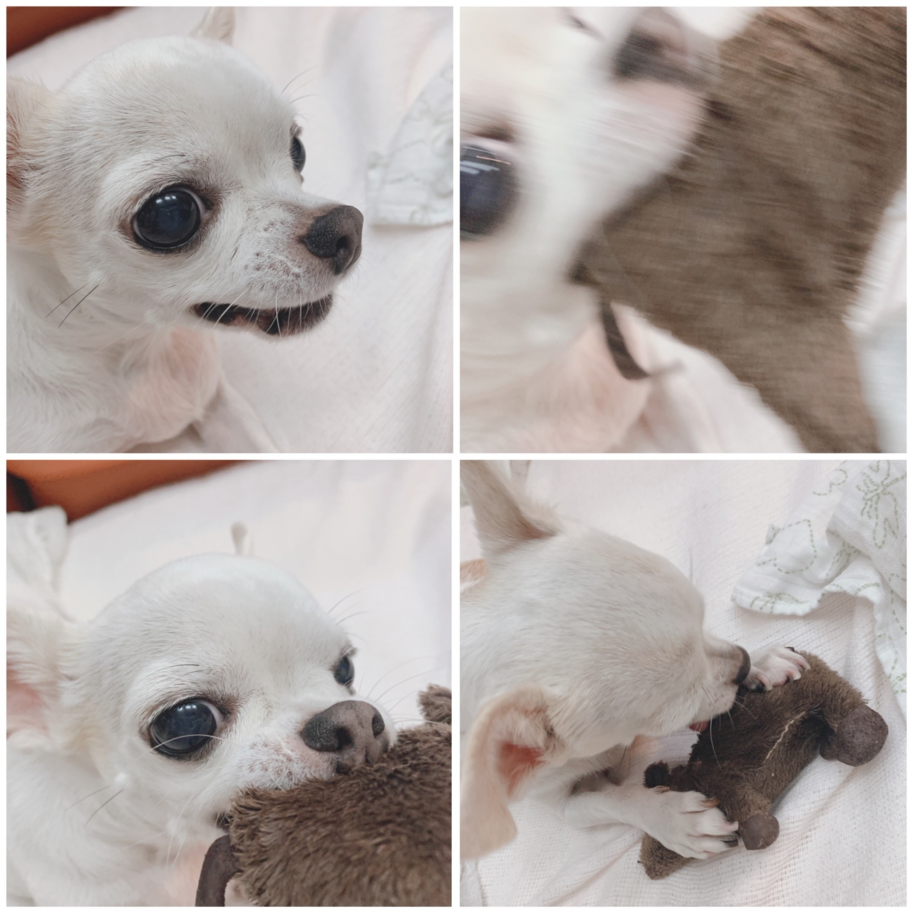
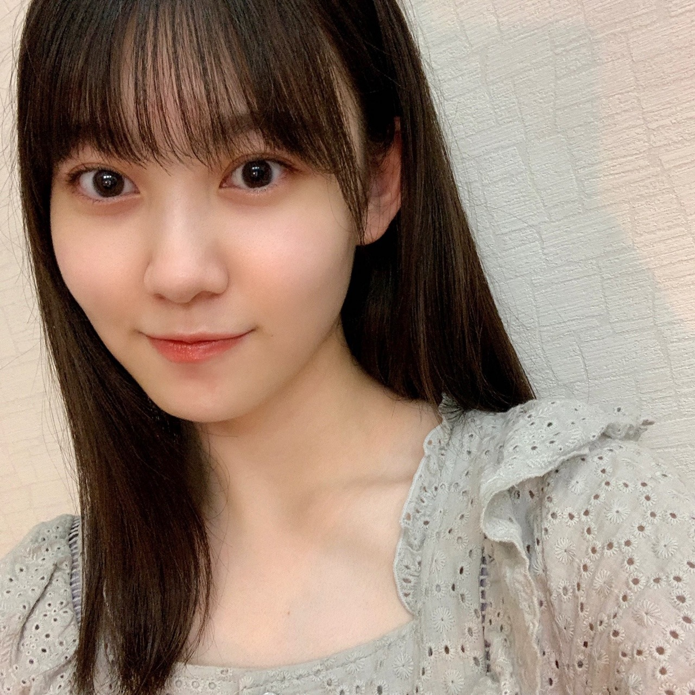
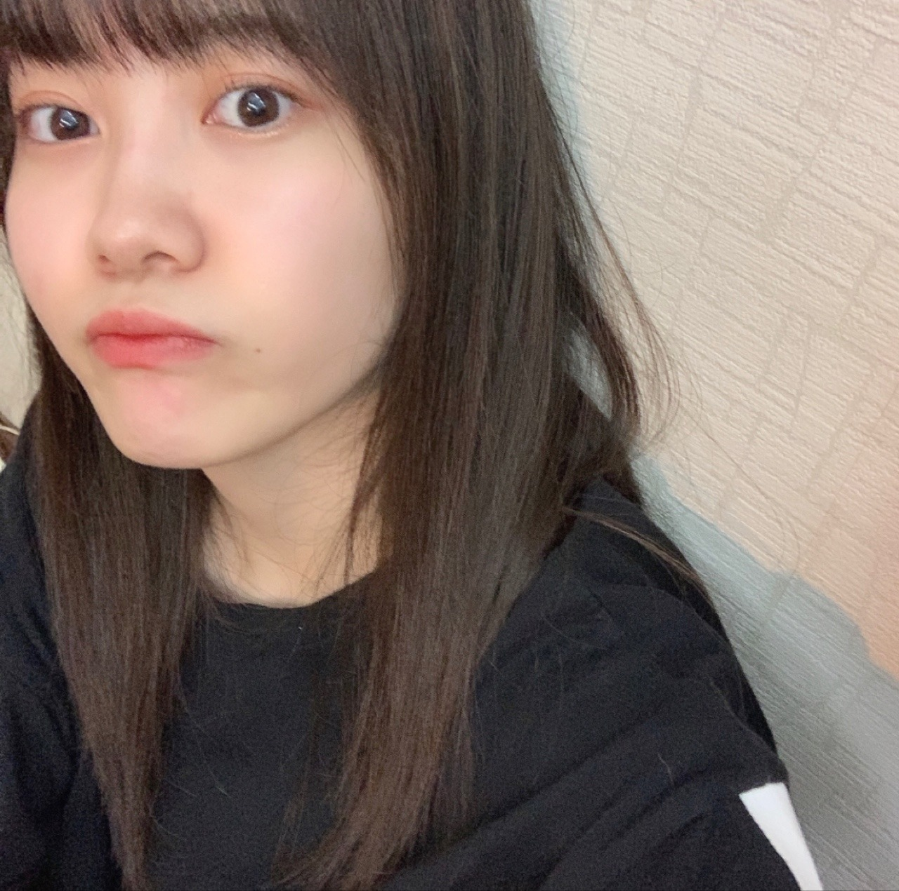

2020/0729Wed蝉の声が聴こえました 松尾美佑
昨日トンボにぶつかっちゃいました。
申し訳ない。
ごめんほんとに。
あとアゲハ蝶？の幼虫が青信号をのっこのっこと渡っていました。
蝶々は本当に本当に本当に苦手で
見つけた時息が止まりそうになったので
距離を保ちました。
もう7月が終わっちゃいそうで焦っています。
夏です
千葉県出身、高校2年、16歳
最近の好きな食べ物は甘栗です。
松尾美佑です。
まつおみゆです。

最近毛先まで真っ直ぐなストレートヘアに若干ハマりました。
お返事！
✽お餅の食べ方で何が1番好きですか？
（やっぱり「きなこ餅」？）
きなこ餅も好きだけどもちピザ派です٩( ᐖ )۶
✽ 宇宙旅行と世界一周旅行どっちに行きたいですか？
エレベーターで宇宙に行くのが小学生の時の夢でした。
✽ ミニトマトでも苦手ですか？
小さくても大きくても苦手です( ˙᷄ỏ˙᷅ )
✽ トマトジュースも苦手ですか？
ジュースになっても苦手です( ˙᷄ỏ˙᷅ )
✽4連休何してた？
今更過ぎますが梨泰院クラスを一気見しました〜
イソちゃんもお洋服も全て可愛すぎました⸜❤︎⸝
✽夏休みの宿題は計画的にやるタイプですか？それとも後半で追い込みをかけるタイプですか？
小学校〜中学2年生くらいまでは配られた日に全部終わらす派でした(ง ꙭ)ง
でも途中から最終日にやる派になって、最終的にやらない派になりかけて、今はコツコツやろうと心の端っこで思っていますᐠ( ᐛ )ᐟ
✽ 最近よく食べてるフルーツってある？
メロン！美味しい！
✽ ミュウちゃんって天使ですか？
いいえ、多分どちらかと言うと悪魔の部類に入ると思います( ⋅֊⋅ )
でもうちには本物の天使がいますよ。

この子は天使確定です
ネズミのちゃいろさんに思う存分噛み付いた後はしっかりちゃいろさんの心のケアをしていました。
✽ 美佑ちゃんはRoute246どう思った？
テレビ初披露、とってもかっこよくて綺麗でした！
手の細かいフリや、フォーメーションが次々に変わるところがかっこよくて凄い好きです。
1度聞くと頭の中で曲が流れてくれて嬉しいですˊᵕˋ
✽ みゆやっほー✌️
やっっっほーーーーーーーーーーーー✌️

少しでも早く全国がお天気になりますように¨̮
明日は〜
なお〜〜〜〜〜〜〜〜〜〜
ꪔ̤̥ꪔ̤̮ꪔ̤̫
この子達可愛くない？
今すっっごいやってみたい夢があって、
いつか出来たらいいなぁって
想像を広げています*ˊᵕˋ*
叶いますように♀️➰✨
いつかの為に楽しみにしててくださいね¨̮
ミュウでした¨̮

ばいっっっっっ( Ꙭ )/''

PROFILE
新4期生リレー
202104
| SUN | MON | TUE | WED | THU | FRI | SAT |
|---|---|---|---|---|---|---|
| 1 | 2 | 3 | ||||
| 4 | 5 | 6 | 7 | 8 | 9 | 10 |
| 11 | 12 | 13 | 14 | 15 | 16 | 17 |
| 18 | 19 | 20 | 21 | 22 | 23 | 24 |
| 25 | 26 | 27 | 28 | 29 | 30 | |

コメント(200)
みゆ！
やっほー！
ひろき(Yandji)です☺️
ブログ更新ありがとー！！！
質問タイムー！！！
カラオケの十八番ある？
また、コメントするね！
では、またねー！
ひろき(Yandji)より
ところで、ミュウは、打ち上げ花火、下から見る派？横から見る派？
夢はどんどんふくらませてね
想像力はどれだけあっても困らないもんね！
どんな夢だろう？
いつか叶うことを応援してる！
7月もあっという間だったねー
まだ涼しいけど来週から30度超えみたいだね
体調に気を付けて～
またっ！
最近暑いなぁ。7月ももうすぐ終わるし、本格的に夏！って感じやね。今年は夏休み短いから、暑い中も学校行かなあかんよな、、 もう耐えられる気がしない。今年の夏は早く終わりそうな予感笑 プールとか海とかも行けそうにないしなぁ。家で勉強しかない？受験生にとっては大事やねんけどな笑
Route 246かっこいいよね。曲だけじゃなくて、ダンスとかもめっちゃかっこよかった。早くMV公開されへんかなぁ。これから色んな歌番組で乃木坂見れそうで嬉しい！またMV公開されたら、感想とか伝えれたらいいな。暑いから体調には気をつけて頑張ってね。ではでは次のブログも待ってます。いつもありがとう。
もうすぐ梅雨明けしそう〜
ミュウちゃんも天使です笑
ミュウちゃんもコントの練習してるんですか？
早くみてみたいなぁー
これからも頑張って
応援してます！
私は今日やっとテストが終わりました！めっちゃ1週間長く感じました。。あと今日の帰り道に私はセミとハチが多すぎて心の中で叫びました笑笑
梨泰院クラスめっちゃ人気よね！私ももうすぐ夏休みやし見てみよかな！
またブログ待ってます~
虫ともディスタンス保った方がええかもね笑笑
そしてストレートええな！天パには縁がなさ過ぎる！笑
美佑ちゃんも充分天使や！！！
その夢いつか実現させような！！応援しとるで！
またブログ更新楽しみにしてるばい！
栃木より愛を込めて。
私は飛んでる虫は基本的に全部苦手かな。夏になると虫が入ってくることがあるから嫌い笑
ストレートヘア似合ってる！！私もストレートスキ
夢なんだろう、、夢を持つことはすごく大切なことだし応援してるね。
私も質問させてもらうね。
◯8月の目標とかあったら教えて欲しい！
◯みゆちゃんの好きな服のブランドは？
1枚目の写真ちょっと色気があって好き
また5日が楽しみにしてるねー！
トンボにぶつかるのなかなかないよね？笑 凄いよ笑
夏ですねぇ！ いつも楽しそうな写真ありがとう！
ブログ楽しみに待っています！
今日は更新されてからすぐ見れて嬉しい
バイトで昨日めっちゃ嬉しいことがあってん！笑
いつか直接言えたらいいなぁ…笑
今からバイト頑張ってくる！
ミュウちゃんのおかげでまた頑張れそう
またコメントするね！
最近１日で三回蚊に刺された
まほ⊿
みゆ！
ひろき(Yandji)です☺️
トンボにぶつかったん？
なかなか無いよねw
でもおれ、自転車乗ってるとき、蜂が頭の上に落ちてきたことあった
あんときは、まじで、びっくりした
もう7月終わるよね、、、
めちゃ早く感じる、、、
なかなか作業は進んのに時間だけ過ぎていく
時間よ止まってほしい、、、
ストレートヘアって羨ましいよな！
おれ、天然パーマやから、ストレートヘアの人すごい憧れるんよなぁ！！！
返事についてコメント書いてみた！
もちピザ派なんや！
おれは、きなこ派☺️
ミニトマトもトマトジュースも苦手なんや
トマトソースのパスタとかはいけるん？
おれは、4連休は、学校無い日はずっと家で研究してた！
褒めてほしいわ☺️
できることを全力で頑張らないとね！
ミュウちゃん悪魔なん？
天使にしか見えへんわ！
ペットいいなぁ、、、
おれも、将来はトイプードルかチワワ買うのが夢や☺️
写真全部かわいいな☺️
個人的には1番最後のやつが好きやわ！！！
よし、研究にもどる！
頑張ってくるわ☺️
お互い身体に気をつけて頑張ろなぁ☺️
では、またねー
ひろき(Yandji)より
久しぶりのお返事コーナー嬉しい…！！
美佑ちゃんも本物の天使だよ〜(*´꒳`*)
☆ ꪔ̤̥ꪔ̤̮ꪔ̤̫
この子達にお名前つけるとしたら何てつける笑？？
☆秋は好き〜？
やってみたい夢がいつか叶いますように╰(*´︶`*)╯♡
今日は短いけどこの辺で……
また5日後に笑顔で会おうね〜☺︎
またコメントするね♪
握手会が始まったら、めっちゃ行きたいです！
応援してます。
質問です！！
梨泰院クラスの他におすすめの韓国ドラマありますか？
また感染者が増えてきちゃってみゆちゃんに会える日が遠くなっちゃうのかなって思ったら悲しくなったよ( ; ᯅ ; ｀)
でも絶対いつか会える日が来る！って思ってるからそれまで楽しみとっとくね(*´ω｀*)
なんか毎回同じようなコメントになっちゃってるかな？
みゆちゃんの夢気になるなぁ
自分は今日で20歳になりました！
北海道でまだトンボ見てないかも！！
またブログ更新楽しみにしてるね！
ブログ更新ありがとう！
ミュウちゃんの家の天使ほんと可愛いわ！でもミュウちゃんの方が天使だと思うよ笑
まだ梅雨明けしてないけど、元気に過ごしてください
トンボとぶつかった？あと、蝶々は苦手だけど、トンボは平気？(ﾟдﾟ)！
お、写真に写ってる指輪に触れてほしいよ(｡>﹏<｡)
・トマト苦手って、やっぱりももこに聞かなきゃ(｡>﹏<｡)（笑）
・えー、ミュウの悪魔の一面をもっと見たいなあ(*´ω｀*)♡（笑）
あら、ワンちゃん可愛い。いや、ぬいぐるみを噛み付くって悪魔じゃない？（笑）
もし天使ならば、今度ミュウも噛んでみて＼(^o^)／（笑）
ワンちゃんの名前は？
「この子達可愛くない？」って多分絵文字の話でしょう？
パソコンで表示しないけど(;_;)
（あっ、今違うブラウザで確認した、ニコマークと謎の四角（？）だよね＼(^o^)／）
ミュウの夢が叶えるように(｡>﹏<｡)
ばいっ(/･ω･)/（笑）
これからも頑張って(/･ω･)/
僕も蝶々がイチバン苦手で幼虫となると身体固まりますよね。。。実は昨日見かけちゃいました(^^) その瞬間フリーズしましたね。嫌な季節が来たものだ。。けど夏は好き。ジョーじぃです。
ミュウちゃんの髪型すごく好き！！毛先までストレートなのが好きです(^^) 今日の写真も大人の女性って感じがして美しいです(´∀｀)
夏休みの宿題を配られた日に終わらせるってすごいね。。！
冊子の課題はすぐ終わるけど絵描いたり書き初めしたりの宿題は残りガチでした。
ジャンケン
グー！
いかがでしたか？
ブログ更新ありがとう！次回も楽しみにしてます！
では！バイジョーじ！
僕もトマト嫌いなんですけど、大きいのと小さいトマトは嫌い、
トマトジュースも嫌い、トマトスープは好き、ケチャップ大好きなんですけど、ミュウはどうですか？
栗好きなのめっちゃ分かります。
むき栗とか食べだしたら止まらず一袋完食しちゃいます
✄-------------------‐✄
最近は学校の近くの公園から蝉の鳴く聲が授業中に聞こえてきてなんかエモくなりました。ミュウちゃんはどんな時エモくなりますか？
✄-------------------‐✄
ミュウちゃんの夢、叶ったら絶対教えてくださいねᗦ↞◃
ほなまた5日後〜
個人的な話だけど学校が終わったよ！！！もう夏休み！！！w
みゆちゃんはまだ学校あるのかな？？？
みゆちゃんはどう考えても天使の部類に入ると思うけどみゆちゃんが悪魔っていうなら天使の中の悪魔かな？wwwやんちゃんがノギスキでやってたみたいなww
〇質問
これから夏休みに入ってきますが夏休みにできる挑戦したいことはありますか？(´-`) .｡oO
夏と冬だったらどっちが好きですか？
また、みゆちゃんのブログの5日間がんばろう！！！！
それでは、また5日後にオアイシマショウ。
私も蝶々苦手だからめちゃ気持ちわかる！
できるだけ近くに寄りたくないなぁって見かける度に思ってる笑
私ね最近みゆりんとの共通点を探しがちなんだけど
共通点を見つける度にどんどん好きになってる！
これからもたくさん共通点見つけてもっともっと好きになってもいい？
話題の転換下手くそで申し訳ないのだけど質問があるの！
この夏の目標とかってある？
もしあったら聞いてみたいなぁ
暑くなってきて熱中症とかも心配な季節だから
水分とったりして気をつけてねー！
次のブログも楽しみにしてるね☺︎
土砂降りの雨 全部避ける人！、、、、、、
はい。
昨日家帰ったら玄関にめちゃくちゃ大きい蛾がいてひぇってなった。ヤママユガってやつかな。デカすぎて誰か飾り物的なの買ってきて付けたんかと思った。。虫びっくりするよね。ひぇ。
マゥのroute246も見てみたいし、いろいろ楽しみが増えてくよぉ！
どんな夢か気になるし夢を持ってる時って最高に楽しいからね！そんなマゥを見てこっちも楽しむのさ
もし悪魔になれたらなにしたい？
またねん
そして朝のコメントぶり!
すっごくやってみたい夢なんて聞いちゃうと気になるよ‼︎
楽しみにしてるね
ここでミュウちゃんに質問〜
●夏の暑さ対策を教えてくださ〜い
僕は暑さが苦手で、夏はクーラーの部屋から出たくないんです...
だからミュウちゃんなりの暑くても頑張れる方法を教えてね!
じゃあまたコメントするね
また5日後ね!
バイバーイ
りーくん
ミュウちゃんは天使の中の悪魔なのかな ホントの天使さんめっちゃカワイイネ！
ストレートヘアにあってるよ！ ノギスキの時も見たけど、すごくかわいいし、リアクションがよかったよ！
トンボにあたって謝るミュウちゃん優しいね
昔は虫に触れたのにいまは無理なのってどうしてだろうね
絵文字の子達かわいいね 名前付けるならどんなかんじかな？
次の回もミュウみゃんのかわいさを待ってまーす
トマト苦手なのね？
自分も。
何とも言えないあの感じが苦手で…
大も小もジュースもダメだもん…。
分かるわぁ。
ブログ更新ありがとう〜〜
トンボとぶつかったwwwめっちゃ可愛い❤️
そのトンボも最高だったであろうと思う。
ミュウちゃんは、梅干し、梅のお菓子 、好きですか？
気になってます。私は名前の通り大好きです。
ミュウちゃん体調崩さないでね。応援してます！
みゅうちゃんは、本当に天使ですぅぅ❤︎❤︎❤︎
質問です！
⭐︎クラゲは好きですか？
私は本当にクラゲが好きなのですが、、、
これからも応援しています！
大好きです❤︎
ブログ更新お疲れ様m(_ _)m
もちピザとか新しい(｀・ω・´)
お、軌道エレベーター知って居るのね？
通だなぁ、また宇宙の話しようね
トマト健康に良いけど、嫌いならばしょうがないね(´･ω･｀)
まぁトマトジュース飲めるならまだ良いかもね
俺は夏休みの宿題やらない派
結果どうなったかは言えない←
天使ですか？
って質問に天使ですって答える人は多分、
天使では無いね(´・ω・｀)
おやすみおな
良い夢を
また明日
ブログ更新ありがとう。
蝶が苦手なんですね…
自分は羽がついている虫全般苦手です^^;
ミュウさんのパフォーマンス見たいなー
楽しいブログ
ありがとう
喜章
(よしあき)
私、この間カラスアゲハとオニヤンマを
見かけたんですよ。
どちらも思ったよりでっかくて怖かったです…((((；ﾟДﾟ)))))))
そろそろ梅雨が明ける頃なので、虫たちも
活発になってきているのでしょうね…
- - - - - - - -キリトリ- - - - - - - -
今回も、私が出した質問に
答えて頂きありがとうございます° ✧ (*´ `*) ✧ °
私も最近メロン食べてるよ〜d(˙꒳˙* )
甘くて美味しいよね☆
他にも、さくらんぼやマンゴー、桃も
最近よく食べてます(っ´ω`c)
まるちゃんの可愛い写真もありがとうね
本当にまるちゃんは天使確定だと思います。
まるちゃん、あなたのつぶらな瞳、大好きよ(*´ｰ`*)
それでは！
ミュウちゃんに沢山の幸せが訪れますように☆*。
玉兎より。
ミュウちゃんブログ更新ありがとう〜
早く晴れてほしいね！
最近ハマってる音楽ある？教えて〜( ^ω^ )
ʕ•̫͡•ʕ•̫͡•ʔ•̫͡•ʔ•̫͡•ʕ•̫͡•ʔ•̫͡•ʕ•̫͡•ʕ•̫͡•ʔ•̫͡•ʔ•̫͡•ʕ•̫͡•ʔ•̫͡•ʔ
おれは蝶々じゃなくて蛾が本当に苦手、小さいのはそんなことないねんけど大きいのはうわっ..ってなる笑
かわいいお写真いっぱいありがとう！
おれもなここ一週間で前髪上げるのに若干ハマってんねん笑
すごい楽でめっちゃ良いことに気づいた笑
ミュウちゃん好きな男性の髪型とかある？？あったら教えてー！！
ミュウちゃんの夢が叶うように応援するね！楽しみしとくよ！！おれも頑張らんとね！
ばいっっっっっ( Ꙭ )/''
ワンチャン可愛いのだ
みゆちゃんもだけどね
ワンチャン可愛いのだ
みゆちゃんもだけどね
蝶々苦手なんだね！意外！なるほど、蝶々ともソーシャルディスタンス取ったんだね！笑 その心遣い素晴らしい！笑
こっちの方も最近セミが鳴き始めるようになって夏だな〜と思ったけど、天気はまだまだ曇り模様だったり家にいる時間が多いから、今までより夏っぽさがあまり感じれてないな〜。
また次週のブログ楽しみにしてますね！！どちらかと悪魔寄りなミュウさん！！笑（いや、天使じゃない？）
コメントする